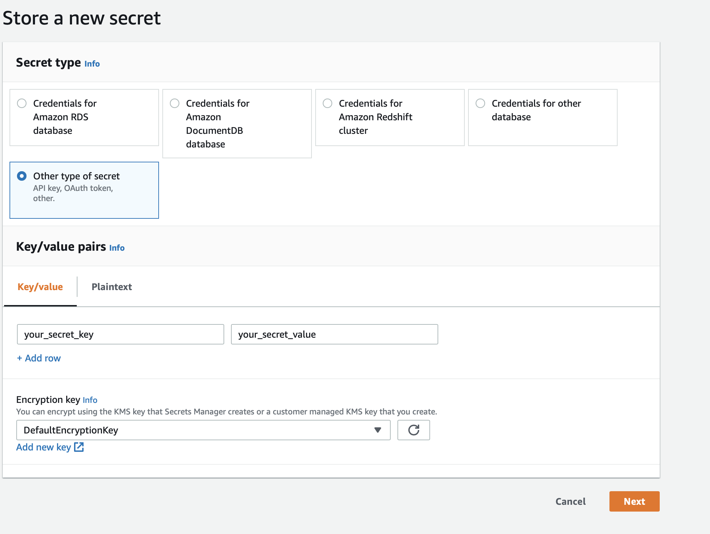
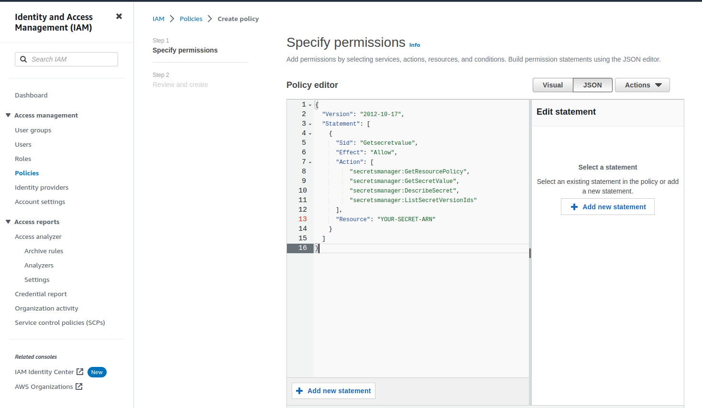
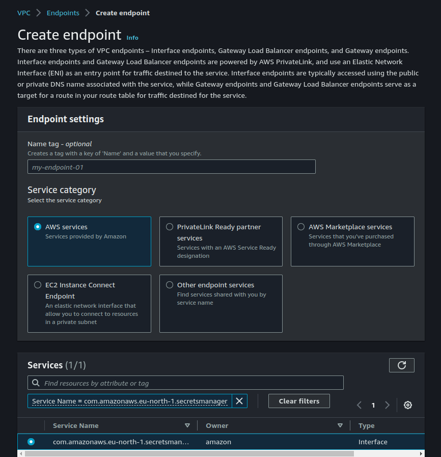

Unfortunately there is not an easy way currently. You need to implement your own logic to retrieve secrets manager secrets.
Go to Secrets Manager AWS console in the region where your infra can be found To store your secret create a custom secret in AWS-Secret-Manager. In secret manager you can create a new secret by clicking "Store a new secret", then selecting "Other type of secret" and entering your secret key/value:  At the next step you need to provide a Secret Name (say "your_secret_name") and you can leave everything else to their default settings.
{
"Version": "2012-10-17",
"Statement": [
{
"Sid": "Getsecretvalue",
"Effect": "Allow",
"Action": [
"secretsmanager:GetResourcePolicy",
"secretsmanager:GetSecretValue",
"secretsmanager:DescribeSecret",
"secretsmanager:ListSecretVersionIds"
],
"Resource": "your-secret-arn"
}
]
}

Change the "Resource" value with the arn of the secret you have created earlier.
Choose 'Roles' on the left side navigation panel on IAM console, and choose the profile you want the plocy to attach to. In 'Permissions' section (Permission Policies) click on 'Add permissions' and choose attach policies. Then chose the policy that you have just created and attach it to the Role.
Go to VPC AWS console, and chose 'Endpoints' from left side menu. Follow this guide.

In your application source on root level path create a folder called .ebextensions
here you can implement your custom logic that retrieves the secret value for you.
Read this guide about 'container_commands' and this one about .ebextensions
# .ebextensions/setup-env.config
container_commands:
01-extract-env:
env:
AWS_SECRET_ID:
"Fn::GetOptionSetting":
Namespace: "aws:elasticbeanstalk:application:environment"
OptionName: AWS_SECRET_ID
AWS_REGION: {"Ref" : "AWS::Region"}
ENVFILE: .env
command: >
aws secretsmanager get-secret-value --secret-id $AWS_SECRET_ID --region $AWS_REGION |
jq -r '.SecretString' |
jq -r 'to_entries|map("\(.key)=\(.value|tostring)")|.[]' > $ENVFILE
Your application then needs to catch up the .env file